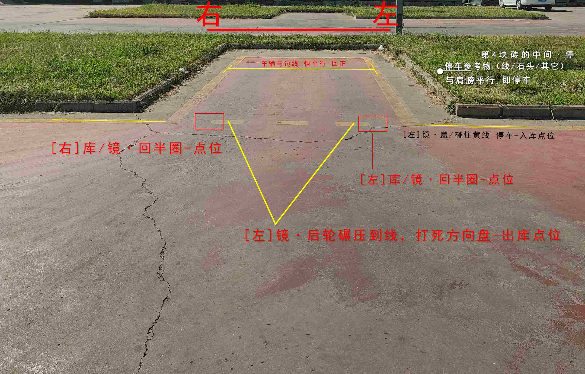

项目解析
倒车入库（半圈入库法）
操作步骤（左库）：
- 1 出库后；工作台最高位，机顶盖偏右点，对准T型库角，成一条直线后，回半圈；待车正后，回1圈（）
- 2 左肩旁与虚线，平行，停车
- 3 挂倒挡；当[左]后视镜，与虚线重合时，迅速，左打死，方向盘（本驾校，为车轮碾压到，地上实线）
- 4 看[左]后视镜，露出，第三根黄虚线，盖住一半时，迅速回半圈，方向盘（黄虚线，以）
- 5 看[右]后视镜，当车身与边线，即将平行时，迅速回正方向盘
- 6 [左]后视镜，与黄虚线，重叠时，停车（本驾校，放置参考物，与肩旁对齐；或门把手，盖碰住，库实线）
- 7 【出库】挂1挡，看[左]后视镜，当车轮碾压，虚线时，迅速右打死；车近正时，回正，下一项目
操作步骤（先右库）：
- 1 从左往右数，第2-3根线的中间，行驶；车轮尽量，在第2根线的边线上
- 2 肩旁与虚线，平行，停车
- 3 踩离合，挂倒挡；当[左]后视镜，与虚线 重合时，迅速向右，打满方向盘（本驾校，为车轮碾压到，地上实线）
- 4 观察[右]后视镜，露出，第三根黄虚线，盖住一半时，迅速回半圈，方向盘（黄虚线，以）
- 5 继续观察[右]后视镜，当车身与边线，即将平行时，迅速回正方向盘
- 6 [左]后视镜，与虚线，重叠时，停车（本驾校，放置参考物，与肩旁对齐；或门把手，盖碰住，库实线）
- 7 【左倒库】挂1挡，看[左]后视镜，当车轮碾压，虚线时，迅速左打死，方向盘
扣分点
- • 不按规定路线、顺序行驶 - 100分
- • 车身出线 - 100分
- • 倒库不入 - 100分
- • 中途停车 - 5分/次（部分地区直接不合格）

左/右 倒车入库·倒库-点位

右 倒车入库·起步-点位

左 倒车入库·起步-点位
关键点位：
- 库角线与车身距离判断
- 后视镜中车轮与边线位置
- 停车时车头与库线对齐